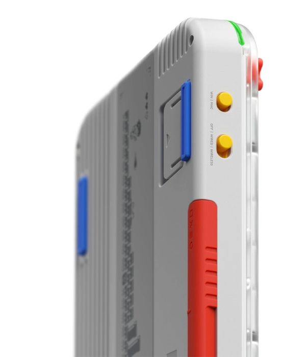
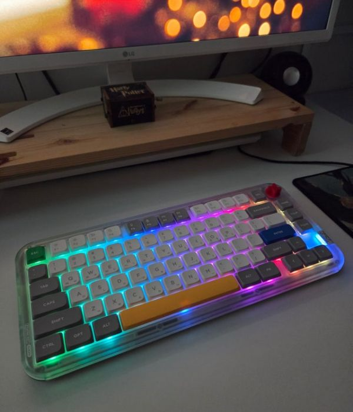
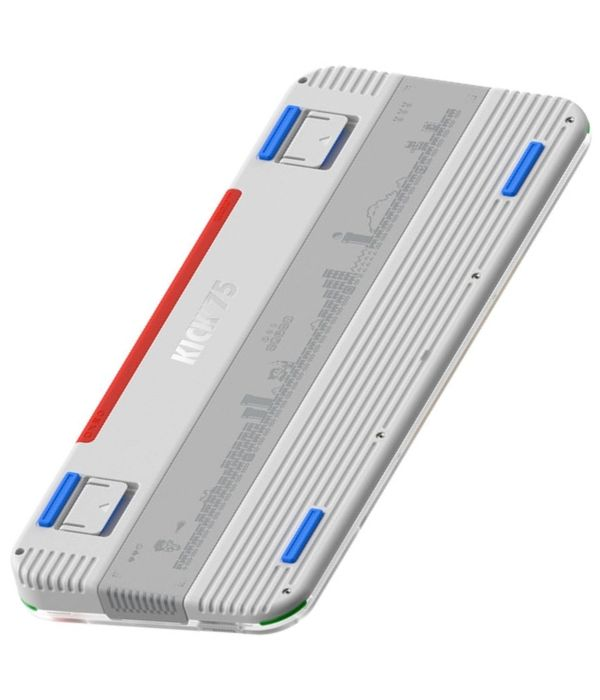

노트북 위로 안착하는 압도적 미학, 무선 로우 프로파일의 정점 | 누피 에어75 V2
누피 에어75 V2는 기동성과 데스크테리어 감성을 완벽하게 만족시키는 프리미엄 슬림 키보드입니다. 하단 알루미늄 프레임과 초박형 설계는 손목 받침대(팜레스트) 없이도 장시간 타이핑 시 손목의 피로도를 획기적으로 낮춰줍니다. 특히 맥북(MacBook) 키보드 위에 완벽하게 얹어 사용할 수 있는 **에어피트(AirFeet) 설계**로 모바일 워크스페이스의 밀도를 극대화합니다. 기존 슬림형의 고질병이었던 타건감 부재를 **카우보정 고품질 윤활 스위치**와 내부 흡음 레이어 보강으로 완벽하게 극복했으며, 콤팩트 레이아웃 속에 세련된 포인트 컬러 키캡을 배치하여 시각적 오브제로서의 가치도 최고조에 달한 기어입니다.



현대 비즈니스 및 크리에이티브 환경은 사무실이라는 고정된 물리 공간을 탈피하여 카페, 공유 오피스, 비행기 등 기동성을 요구하는 모바일 워크스페이스로 빠르게 다변화되었습니다. 이러한 흐름 속에서 무겁고 두꺼운 전통적 기계식 키보드는 휴대성의 한계를 드러냈고, 일반적인 멤브레인이나 펜터그래프 방식은 극도의 조작감 저하라는 고질적 한계를 품고 있었습니다. 글로벌 커스텀 기어 브랜드 누피(NuPhy)가 선보인 Air75 V2 모델은 기존 로우 프로파일 기계식 기어가 타협해 왔던 빈약한 타건감과 무선 연결 신뢰성을 완전히 리빌딩하며 플래그십 슬림 키보드의 표준 아키텍처를 제시했습니다.
누피 에어75 V2의 기술적 핵심 진보는 슬림형 폼팩터 최초 수준으로 도입된 강력한 내부 칩셋 아키텍처와 오픈소스 프로토콜의 결합에 있습니다. 전 세계 하이엔드 커스텀 키보드의 상징인 QMK/VIA 하드웨어 매핑 시스템을 전격 탑재하여, 별도의 무거운 무설치 웹 브라우저 툴만으로 모든 레이아웃 구조와 매크로 설정을 키보드 온보드 메모리에 다이렉트로 이식할 수 있습니다. 여기에 2.4GHz 무선 수신기 연동 시 일반 슬림 키보드들의 한계선이었던 레이턴시 장벽을 무너뜨리고 **유선과 동일한 1000Hz 폴링레이트(초당 1,000회 연동)** 신호 주기를 안정적으로 확보하여, 프로급 타이핑 작업뿐만 아니라 극도의 미세 입력을 요구하는 게이밍 세션까지 완벽한 신뢰성 속에서 지원합니다.
단순히 얇게 만드는 구조적 설계의 한계를 넘어, 로우 프로파일 제품군 고유의 빈약하고 찰랑거리는 보강판 소음을 정제하기 위해 내부에 정교한 '사운드 댐프닝 소싱 기술'을 반영했습니다. 상판과 하판 프레임 사이 공간에 포론(Poron) 흡음재 및 IXPE 스위치 패드, 그리고 전용 다공성 실리콘 시트를 정밀 압착 내장하여 타건 시 울려 퍼지는 불필요한 하이톤 잡음을 완벽히 흡수합니다. 여기에 게이트론과의 협업을 통해 윤활 처리가 기본 적용된 차세대 로우 프로파일 알로에(Aloe), 카우보이(Cowboy) 스위치 라인업을 매칭함으로써 짧은 스트로크 속에서도 기분 좋은 서걱임과 쫀득한 반발력을 완벽하게 직조해 내어 입력 매커니즘의 완성도를 한 단계 끌어올렸습니다.
누피 한국 정식 유통원 정품 라인업을 통해 철저한 워런티 2년 보증 및 한정 수량 실시간 최저가 단가를 즉시 확인하세요.
국내 정품 최저가 혜택 확인하기